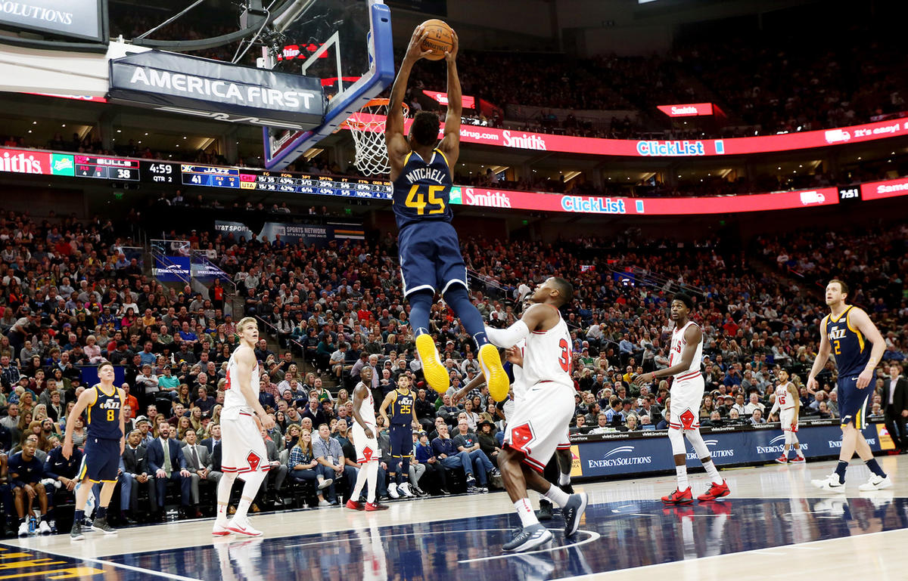

2 days ago
Donovan Mitchell's Rise to Stardom
When the buzzer sounded, Donovan Mitchell was devastated. The Michigan Wolverines had just upset his Louisville Cardinals in the second round of the 2017 NCAA tournament, three games shy of their goal of getting into the Final Four. As he walked off the court, he tugged on his jersey, looked up to the stands and sighed. While talking to reporters in the locker room afterward, he told them he was "focusing on coming back to school and getting ready for my teammates for next year." And as he boarded the team bus in Indianapolis to Louisville, Kentucky, he was sure he would stay for another season.... View More
